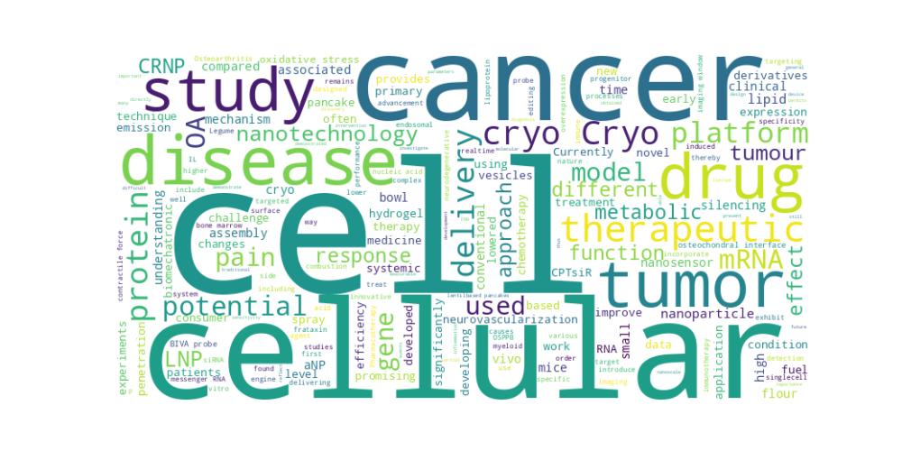

Resultados Esperados¶
Después de ejecutar el análisis, los resultados estarán en la carpeta output/ con los siguientes archivos:
Archivo |
Descripción |
|---|---|
wordcloud.png |
Nube de palabras con los términos más frecuentes en los resúmenes. |
figures_per_paper.png |
Gráfico con la cantidad de figuras por artículo. |
links_per_paper.json |
Lista de enlaces externos extraídos de los artículos. |
Ejemplo de visualización:
